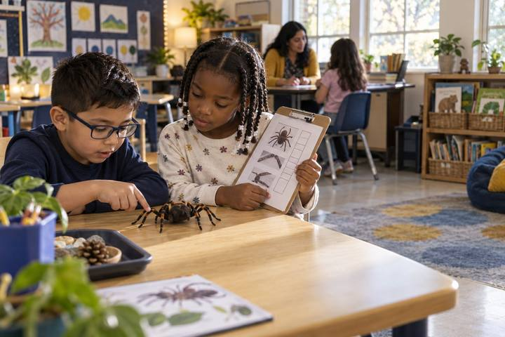

Student learningfor Grades K–2
Ask Two
A confident robot helper says things that are sometimes right and sometimes wrong, and children become learning owners by checking each answer in two places before they believe it.

All activities Student learning
Students rescue a classmate's messy pretend drive, invent a naming and folder system, use version history to recover lost work, and catch what an AI summary of their notes left out.
Students now keep a lot of their schoolwork in digital notebooks and drives, and "I can't find it" costs real learning time. In this hybrid lesson, teams open a paper "drive" belonging to a fictional student, Theo, full of files named Untitled document (2) and asdfgh. They race to find one assignment, then build folders and a naming rule, use a printed version history to recover a paragraph a teammate deleted, and compare Theo's field trip notes to an AI summary that sounds complete but drops the most important details. Students leave owning a filing plan they can use tomorrow on a real device.
Hook
Hand each team Theo's Drive envelope. Say: "Theo's teacher needs his bean plant journal right now. You have 60 seconds. Go!" Teams dump out the cards and hunt. Stop the timer. Ask: "Who found it? How did you know which one it was? What slowed you down?" List the slowdowns on the board (no names that make sense, copies of copies, everything in one pile).
Facilitator noteMost teams have to open (read the preview on) nearly every card. That frustration is the point: the file names gave no clues.
Explore
Teams decide on four folder labels (most will choose subjects: Math, Science, Reading & Writing, Social Studies) and write them on their folders. Then they read each card's preview, decide which folder it belongs in, and write a better name on a sticky note placed over the old name. Challenge: "A new name should tell you what is inside without opening it." Watch for Card 8 (a duplicate) and Card 13 (a list with classmates' phone numbers), and ask teams what they think should happen to those.
Facilitator noteCard 13 is the digital citizenship moment: other people's phone numbers should not sit in a shared class folder. The right move is to tell the teacher and keep it private, not to rename it.
Model
Gather the class. Collect a few new names and compare them. Introduce the class rule: Subject – Topic – Date, for example Science – Bean Plant Journal – Oct 3. Ask: "Why put the subject first?" (All the science files line up together.) "Why the date?" (You can tell the newest one.) Then name the second problem on the board: FINAL final REAL and Copy of Copy of poster. Explain: "Instead of making copies, most notebook and drive apps keep a version history, a saved list of every change, who made it, and when. You can go back to an older version without making copies."
Facilitator noteStay tool-agnostic. Say "look for Version history or File history in the menu" rather than naming a brand.
Practice
Teams read Part 1 of Handout B, the version history of Theo's shared Owl Report. On Handout C, they answer: Which version still had the owl pellets paragraph? Who deleted it, and when? What should Theo do? Guide teams to the answer: restore the Tuesday 2:15 version (or copy the paragraph back from it) and talk kindly with his teammate. Ask: "Was the teammate being mean, or could it have been a mistake? How does version history help you solve it fairly?"
Facilitator noteVersion history also shows who did the work in a group project. Some students find that reassuring; others find it surprising. Both are good discussion.
Apply
Teams read Part 2 of Handout B: Theo's field trip notes, then an AI summary of those notes. Say: "Theo asked an AI tool to shorten his notes. The summary is short and sounds good. Your job: check it against the notes." Teams underline, in the notes, every detail missing from the summary and circle anything in the summary that is not in the notes. Then they rank: which missing detail would cause the biggest problem if Theo only read the summary?
Facilitator noteKey catches: the permission slip due Friday, bringing a water bottle, the change to a 7:45 bus time, and the allergy reminder are all missing, and the summary adds "bring lunch money," which the notes never said. The summary is not evil; it just picked what sounded important and guessed.
Reflect
Students complete the rest of Handout C: their own four folders, their naming rule, what they will do instead of making copies, and one rule for AI summaries (for example, "I check a summary against my notes before I throw the notes away"). Two or three students share their AI rule. Close with: "Organized files are not about being neat. They are about finding your learning when you need it."
Facilitator noteLook for AI rules that name a specific action (check, compare, keep the original), not just "AI can be wrong."
Everything runs with the paper file cards, real folders or envelopes, sticky notes for new names, and the printed version history and notes. Version history can be acted out: four students each hold one version of the Owl Report and line up in time order; the class "scrolls back" down the line to find the version with the missing paragraph.
After the paper round, students open their copy of the practice folder in the drive or notebook app your school already uses, with school-managed accounts. They create subject folders, rename each file with the class rule, and open one file's version history to find an earlier version you created ahead of time. For the AI step, the teacher pastes the Handout B field trip notes into a district-approved AI tool on the projector, asks for a short summary, and the class checks the new summary against the notes, just as they did with Theo's. Students do not use their own AI accounts.
Does it need a screen? The paper round makes the thinking visible: every sorting and naming choice is out on the table. The digital round adds evidence paper cannot, because students show they can rename, file, and restore an earlier version in the real app they will use tomorrow, and they watch a live AI summary leave things out.
What you should be able to see or collect if it worked.
Students organize and name digital files, recover work with version history, and compare an AI summary to original notes to find missing details.
Tomorrow, students rename and file three pieces of their own schoolwork using their plan, and the teacher checks one folder at a glance. At home, students can show a family member their naming rule and help organize one family folder of photos or papers the same way.